Betty is our 1974 Commer PB and the heart of Reci-Oh Pizza.
This page follows Betty's transformation from classic camper van into a fully equipped Neapolitan pizza van.
How We Found Betty
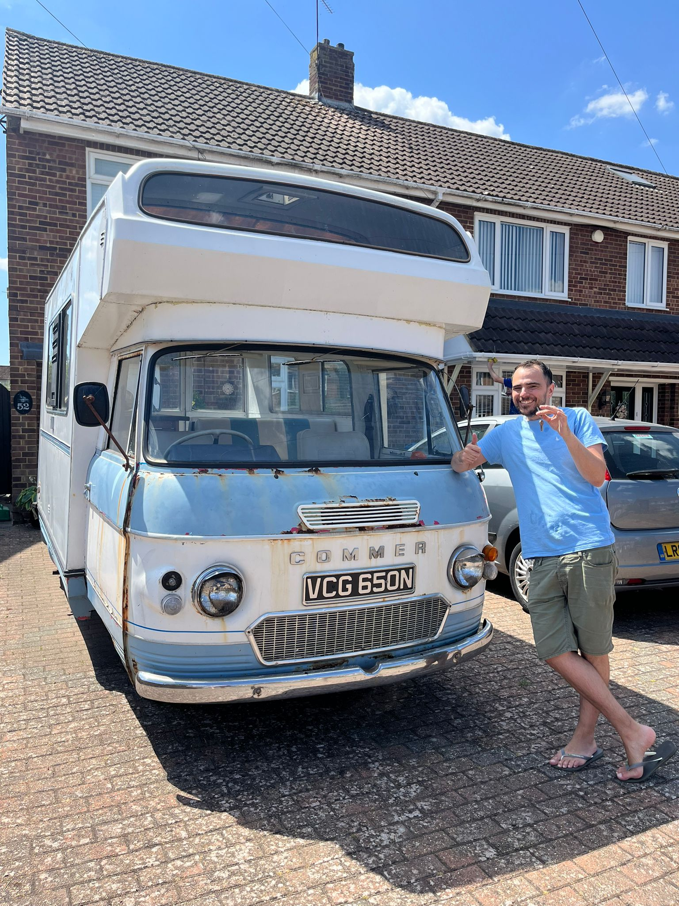
Betty started life as a 1974 Commer PB CI Autohome. We wanted something with real character rather than a modern catering trailer, and Betty had exactly the charm we were looking for.
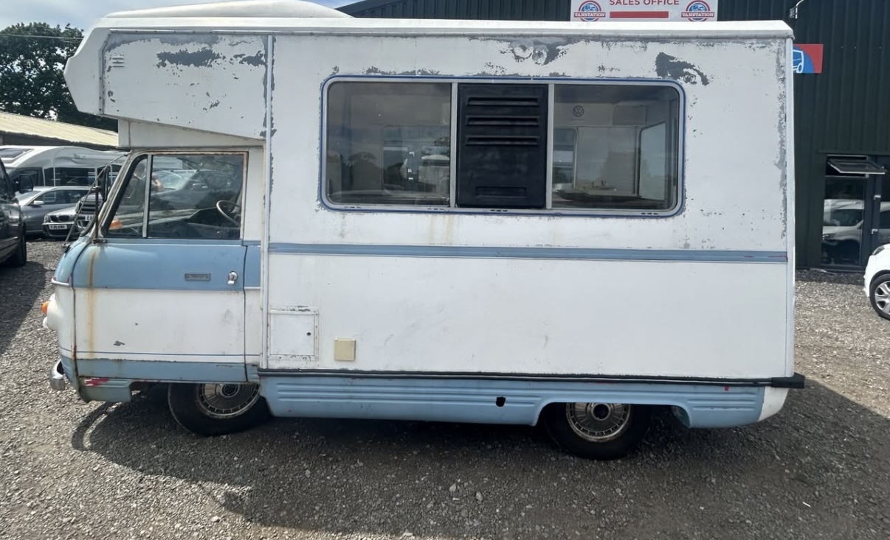
Despite being over 50 years old, she had survived remarkably well and gave us the perfect foundation for the Reci-Oh Pizza project.
The Original Interior
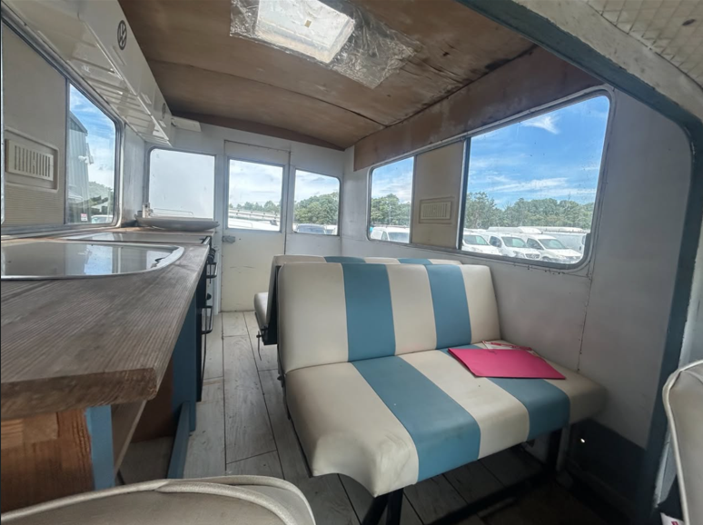
Before any conversion work could begin, the original camper interior had to come out so we could start planning the pizza van layout.
The Stripdown Begins

With the interior removed, the real transformation could begin. Every stage of the build is being planned around turning Betty into the home of Reci-Oh Pizza while keeping her classic character.
Replacing the Side Panels & Timber Frame

Once the inside was stripped, the next job was tackling the side panels and timber frame. This gave us a proper look at the structure underneath and allowed us to replace what needed attention before moving forward with the pizza van build.

The old panels were removed so the framework could be checked, repaired and prepared properly. Getting this stage right was important before building the new interior around it.

With the new side panel fitted, Betty started to feel like she was moving from stripdown into rebuild. This was a big step towards creating a clean, solid base for the kitchen layout.
Fitting the Service Hatch

The service hatch is one of the most important parts of the van. It turns Betty from a camper shell into a proper pizza van, creating the customer-facing side where pizzas will be served.

The opening was carefully framed and built up with plywood so the hatch would sit properly and have a solid structure around it before the inside was finished.
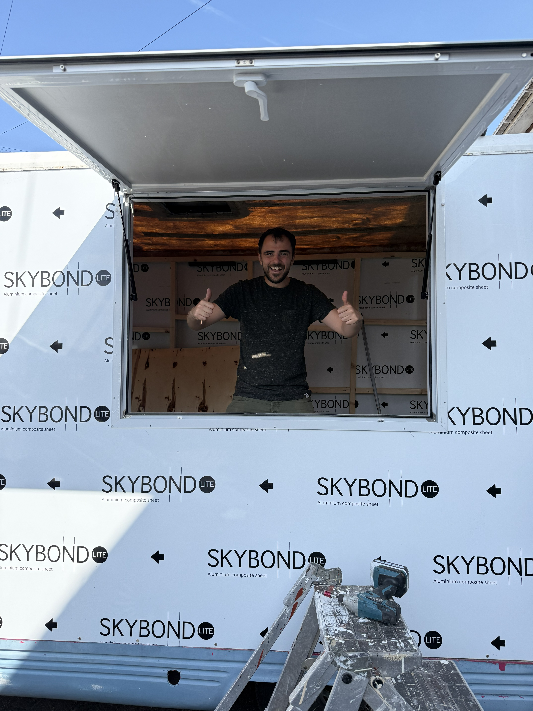
Seeing the hatch open for the first time made the build feel much more real. This is the side customers will see when Betty is out serving pizzas.
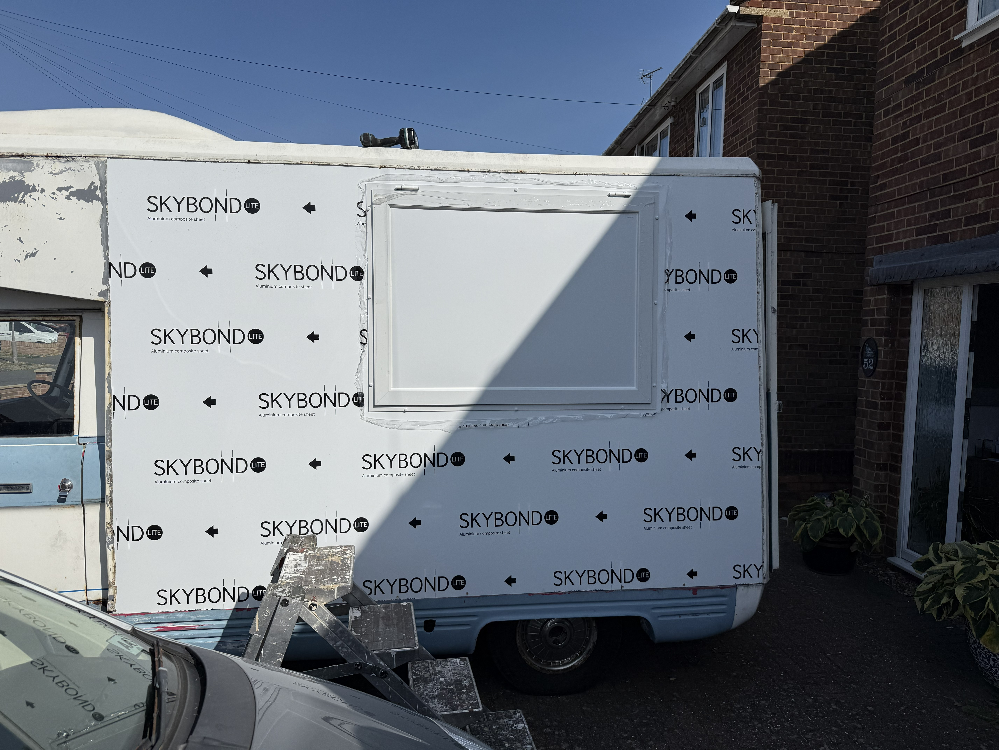
From the outside, the hatch keeps the classic look of the van while giving Reci-Oh Pizza a proper serving window for markets, parties, weddings and events.
Planning the Pizza Van

Before the final interior build started, the layout was mocked up in SketchUp. With a small van like Betty, every bit of space matters, so planning the position of the worktops, storage and oven was an important part of the project. I don't know who the ginger lad is but i named him Frank!

The aim was to create a practical working space while keeping the layout simple, clean and easy to move around in during service.

The customer-facing side was planned around the service hatch, giving Betty a proper pizza van feel while keeping the classic Commer PB character at the centre of the design.
Cladding & Preparing the Interior

With the layout planned, work could begin on turning Betty from an empty shell into a usable workspace. This stage was all about preparing the inside properly before the worktop frames and equipment could go in.

The interior cladding was fitted before the floor was finished, giving the van a cleaner and more practical surface ready for the next stages of the build.

Once the cladding was underway, attention turned to the floor. A solid base was needed for the kitchen layout, storage, equipment and everything else that would eventually be built inside.

By the end of this stage, Betty had changed completely inside. The van was no longer just stripped out and empty — it was starting to feel like the base of a proper pizza workspace.
Building the Worktop Frames
With the floor and cladding in place, the next job was building the worktop frames. These frames set out the main working areas inside Betty, including the oven area, sink area, prep space and topping fridge position.
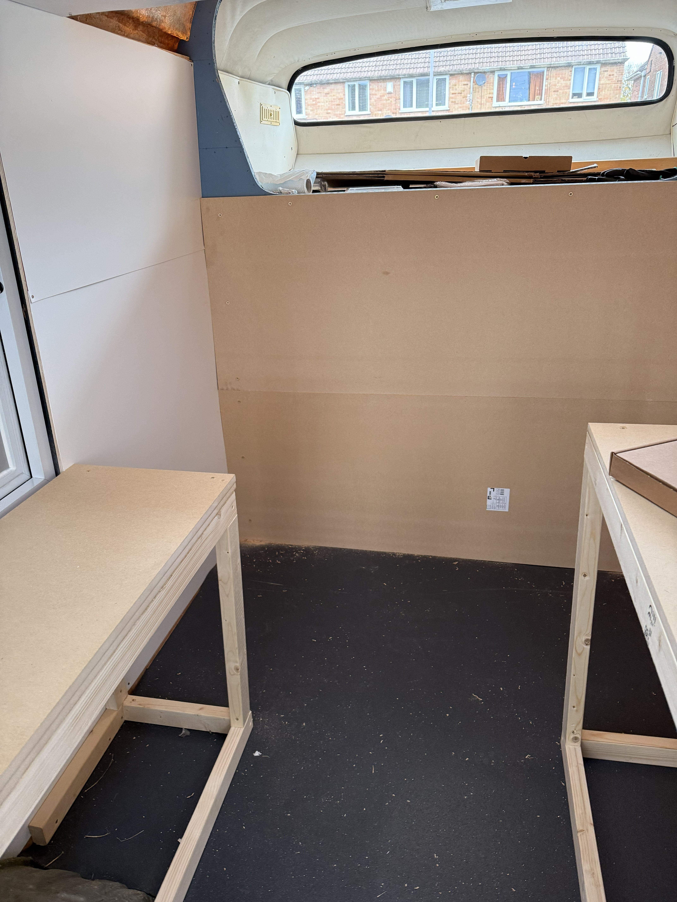


This was the point where the SketchUp plans started becoming real. The frames created the structure for the kitchen layout and made it much easier to picture how Betty would work during service.
Stainless Steel Worktops
Once the timber frames were complete, the worktops were clad in stainless steel. This transformed the interior from a construction project into something that started to feel like a proper food preparation space.


Stainless steel was chosen because it is durable, easy to clean and much better suited to food service. With the surfaces fitted, Betty started to look less like a van conversion and more like a working pizza kitchen.
Plumbing & Water System

With the stainless steel worktops completed, attention turned to the plumbing system. A sink was installed along with the fresh and waste water setup needed to make Betty practical for day-to-day service.

The plumbing was designed to make the best use of the available space while keeping everything simple, reliable and easy to access. With the sink and water system in place, another major step towards a fully functioning pizza van was complete.
Electrical Installation, Roof Lining & Lighting
With the plumbing completed, attention turned to the electrical system and finishing the roof area. Power storage, lighting and the final ceiling panels were all installed during this stage of the build.


The electrical system was built around portable battery power, providing reliable electricity for the equipment needed during service. This allowed the van to remain self-contained while keeping the installation simple and practical.
Once the electrics were in place, the roof area was finished using soffit panels and fitted lighting. The completed ceiling transformed the feel of the interior, creating a brighter and more professional workspace while keeping the classic character of Betty intact.
Nut Gate 🔩
Just when we thought the build was going well, Betty decided to throw us a fairly major curveball.
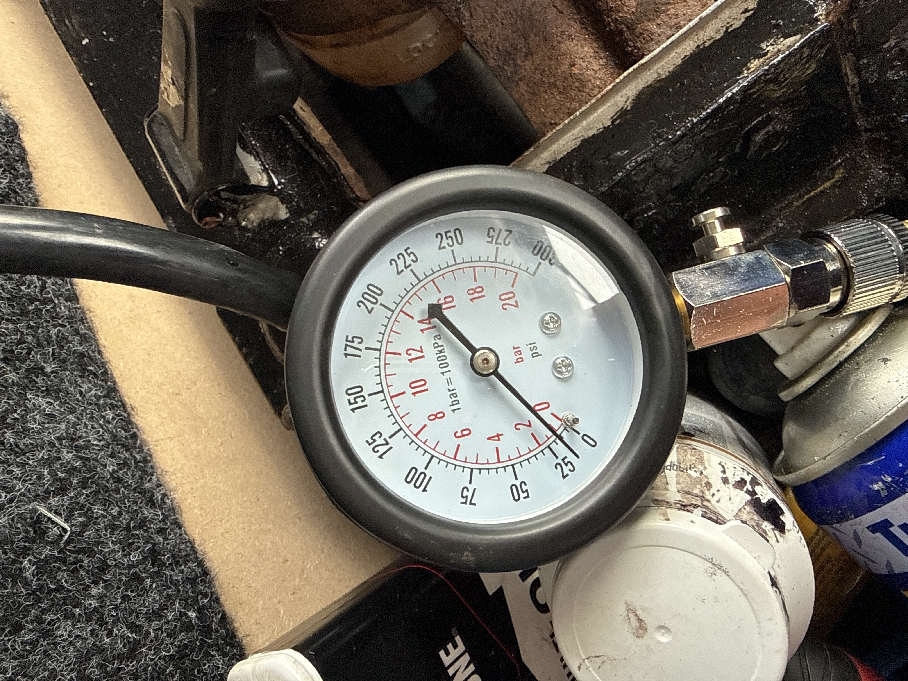
A compression test showed that cylinder 4 had virtually no compression. That meant there was only one thing for it — the cylinder head had to come off so we could find out what was going on.
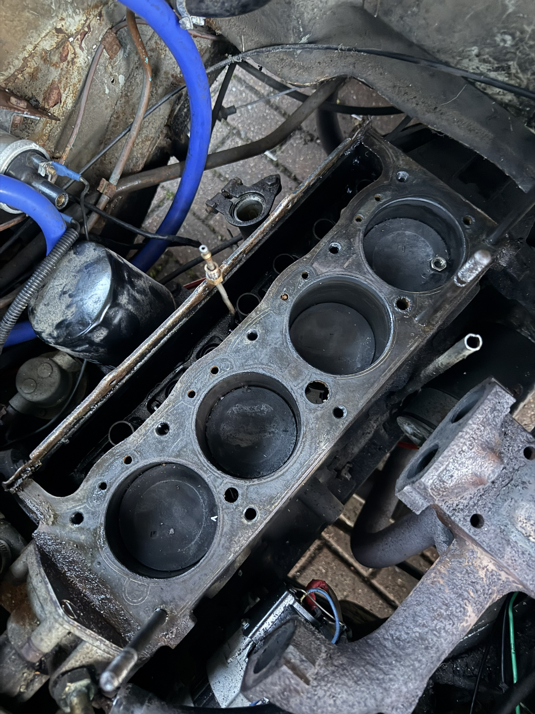
And there it was. Somehow, an M8 nut had found its way into cylinder 4. A tiny piece of metal had managed to cause a very big problem. Nut Gate had officially begun.
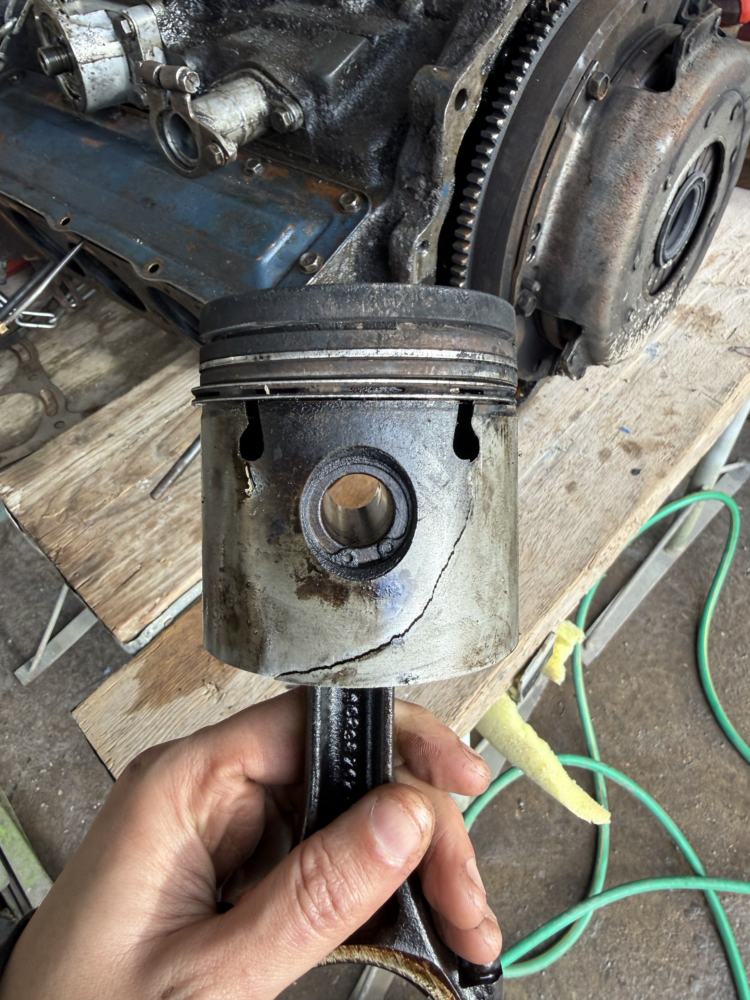
Once the engine was stripped further, the damage became clear. The piston had taken a serious beating and Betty's original 1725cc engine was going to need considerably more than a quick repair.
Robin to the Rescue
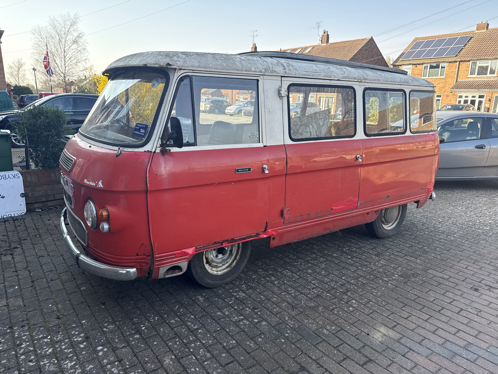
Rather than let Nut Gate bring the project to a halt, another 1974 Commer PB came to the rescue. We called him Robin, and most importantly, Robin had a running engine.
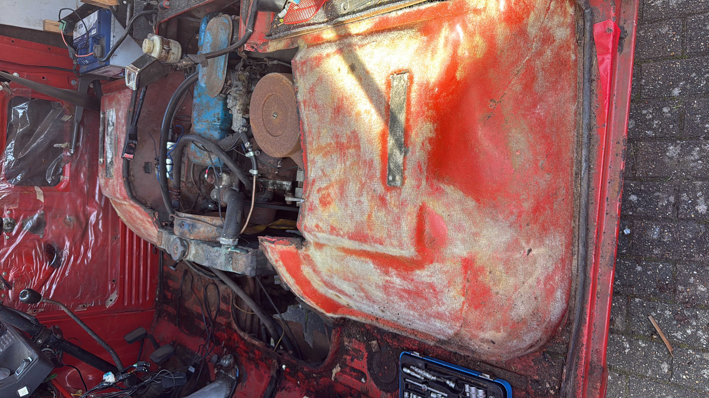
Robin's 1725cc engine gave us the solution we needed. The plan was simple: remove the damaged engine from Betty, take the running engine from Robin and give Betty the heart transplant she needed to get back on the road.
Betty's Face Transplant
With the engine drama finally behind us, attention turned to Betty's bodywork — starting with the front.
Years of corrosion meant there was a lot more hiding underneath than we'd hoped. The front was stripped right back so the damaged metal could be removed and everything underneath could be properly inspected and repaired.
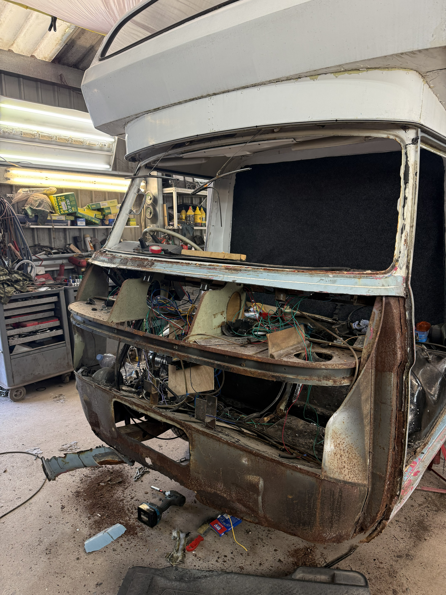
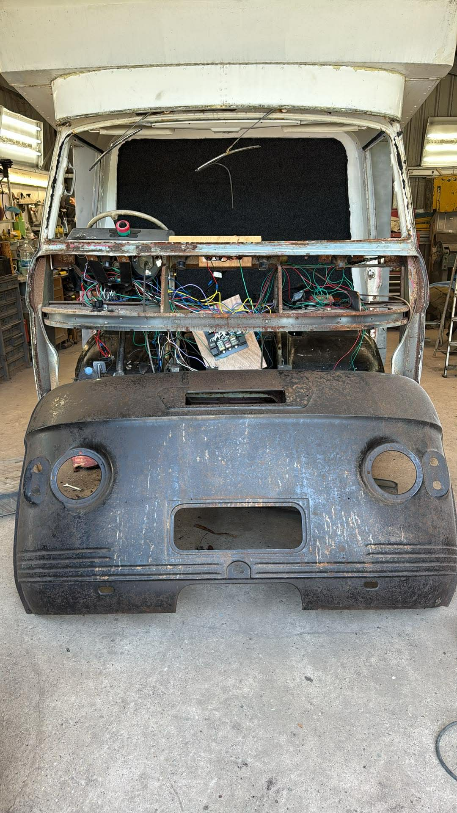
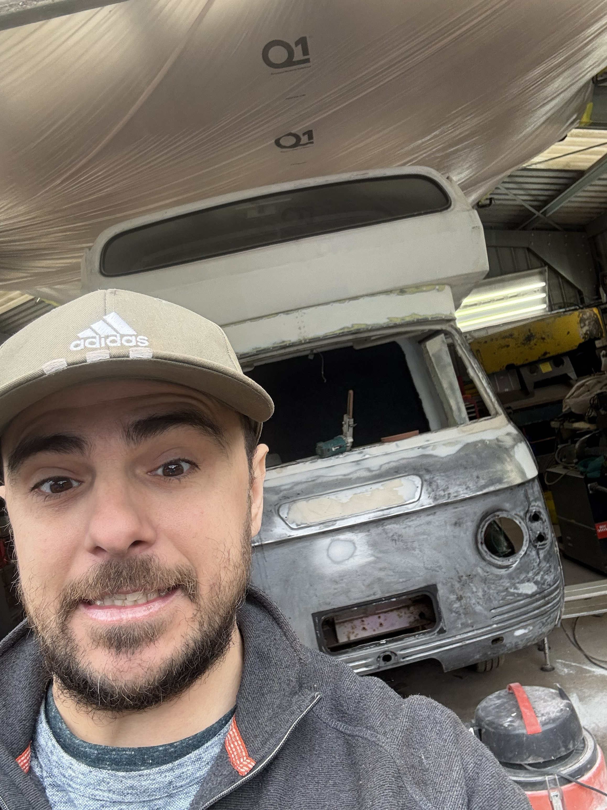
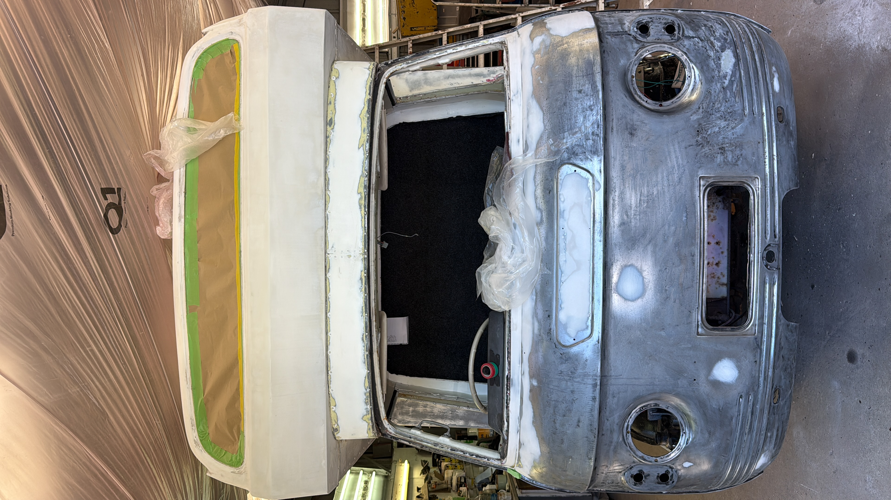
With the old front removed, Betty looked slightly terrifying for a while. Thankfully, we'd managed to strike Commer gold and find a new old stock front panel — an incredibly lucky find for a van over 50 years old.
The replacement panel gave Betty the fresh face she desperately needed. Once fitted, repaired and prepared for paint, she finally started looking like she was being put back together rather than taken apart.
Getting Betty Ready for Paint
With the major bodywork finally complete, Betty was ready for primer. After months of stripping, repairing and replacing panels, this was the first time the whole van started to look like one vehicle again rather than a collection of repairs.
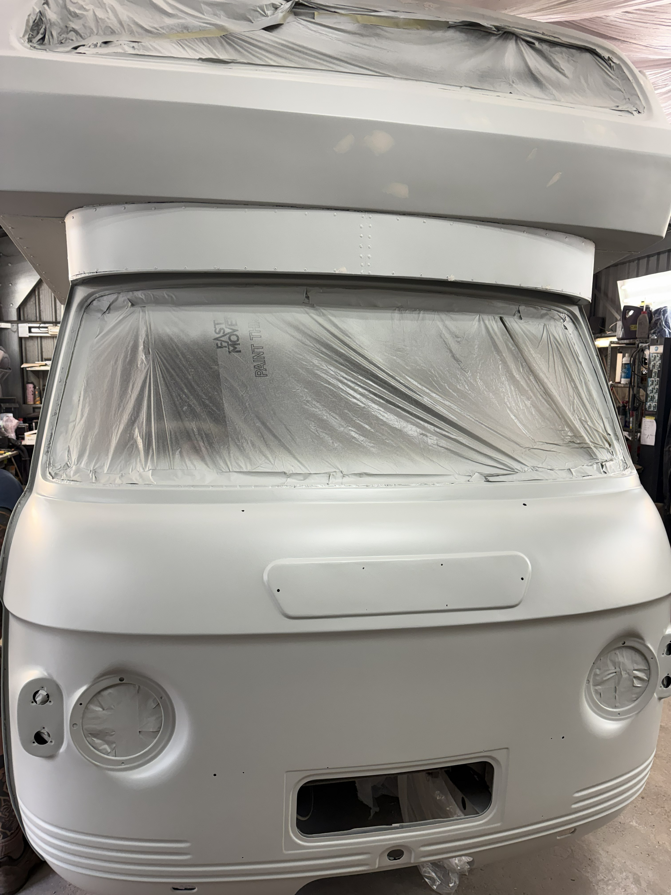
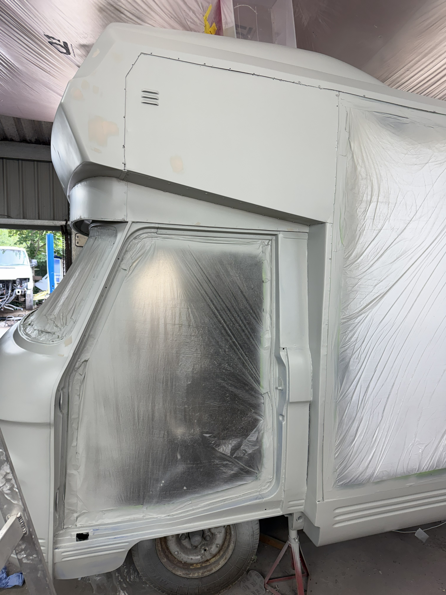
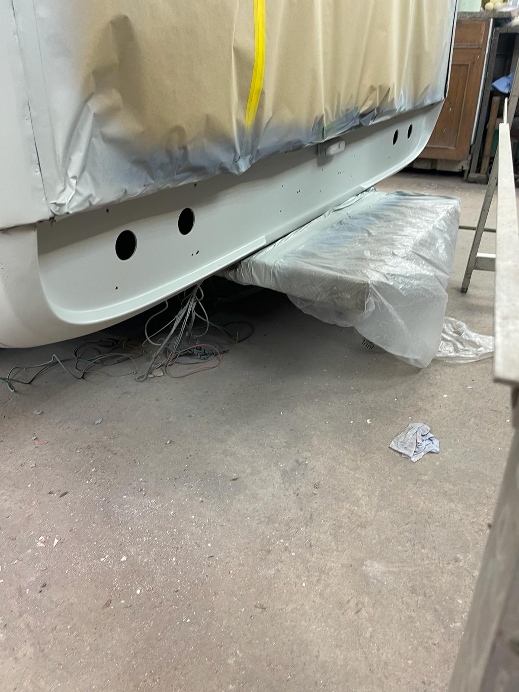
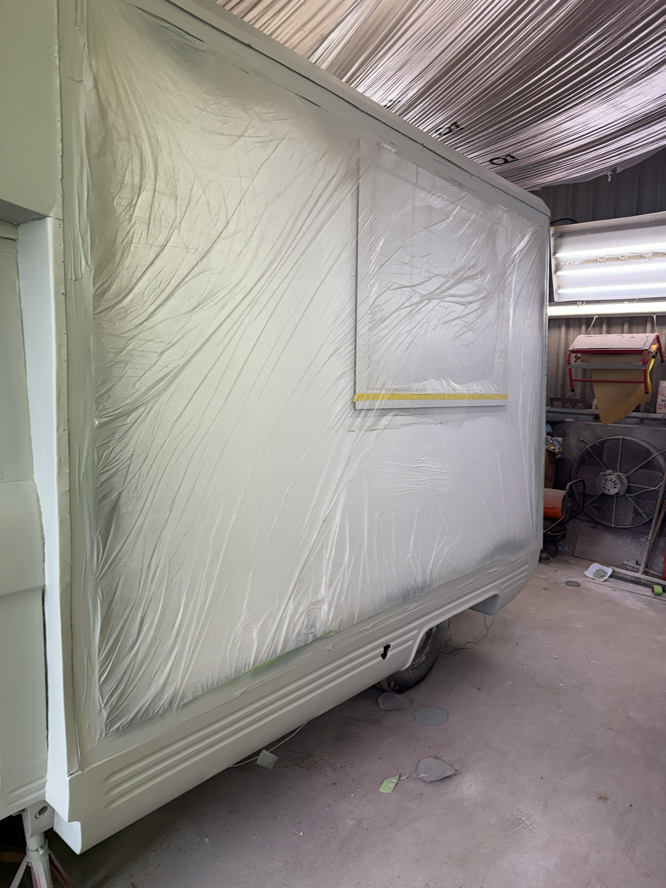
Seeing Betty in one colour was a massive milestone. The primer also gave us a chance to spot any final imperfections and get the bodywork as straight as possible before the colour we'd chosen for her finally went on.
Back Home